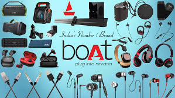
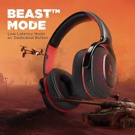
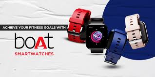

How India's audio disruptor transformed commodity electronics into aspirational lifestyle statements through perfect product-market fit and youth culture positioning.

boAt transformed commodity audio accessories into aspirational lifestyle statements by perfectly positioning between expensive global brands and cheap alternatives — targeting students, first-jobbers, and digital-first youth.
The genius was creating products that look premium, deliver bass-heavy performance, and stay affordable while selling aspiration over specifications.
This product-led case study reveals how boAt built massive scale through visual appeal, youth culture positioning, influencer ecosystems, and marketplace dominance.
boAt identified the gap: consumers wanted premium-looking products with strong bass sound at affordable prices. Instead of technical specs, products became symbols of modern lifestyle and self-expression.
Every headphone, earbud, and speaker was designed for real-life scenarios — workouts, gaming, travel, fashion — making consumers instantly visualize usage and aspiration.
"boAt didn't sell audio devices — it sold confidence, style, and youth culture at mass prices. Perfect product-market execution."
Consistent messaging across campaigns reinforced energy and lifestyle appeal. Influencers (cricketers, gamers, fitness creators) placed products in target ecosystems, accelerating trust and purchase decisions.

Smart channel mix leveraged Amazon/Flipkart trust while building D2C. Optimized product pages, strong ratings, and user reviews created seamless conversion funnels.
Social media awareness → influencer interest → marketplace conversion created high-velocity growth loops. UGC and reviews amplified social proof exponentially.
"Marketplace trust + lifestyle positioning = explosive D2C growth. boAt mastered the digital purchase journey completely."
Funnel optimization was relentless: scroll-stop creatives → real-life usage demos → trusted checkout → repeat purchases through ecosystem lock-in.

Positioned perfectly between expensive globals and cheap unbranded — visual premium at mass prices created instant market fit.
Sold lifestyle confidence, not technical features — products became symbols of youth culture and self-expression.
Every product engineered to look expensive while delivering bass-heavy performance expected by Indian youth.
Cricketers, gamers, fitness creators placed products in exact digital spaces where target audience lives and shops.
Social awareness → influencer trust → marketplace conversion created high-velocity, low-friction growth loops.
User reviews, unboxing videos, and social proof created exponential trust signals accelerating repeat purchases.
boAt proves products succeed through emotional and aspirational value, not specs alone. Perfect positioning between premium globals and budget alternatives created massive scale.
The formula works across categories: visual premium design + youth culture positioning + marketplace trust + influencer ecosystems = explosive growth.
Marketers must sell identity and lifestyle enabled by products. boAt transformed commodity electronics into Gen Z fashion statements through relentless execution.
At Brand Business Talk, we help brands with research, strategy, market insights, and growth recommendations. Let's build your brand growth strategy together.